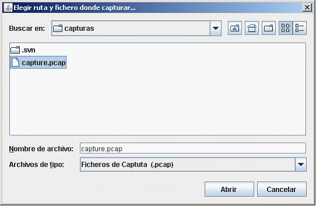
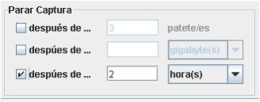

Captura con adaptador de red
Ventana desde la que iniciar una captura.
Desde esta ventana pueden realizarse las siguientes funciones:
- Escoger el dispositivo de captura (adaptador de red) desde al cual se esnifaran los paquetes que circulen por la red. Se trata de un menú desplegable que los mostrará todos los adaptadores de red disponibles en el sistema.
- Por defecto aparecerá seleccionada la opción de captura en modo promiscuo y no será necesario modificarla
- En la sección de filtros podremos aplicar aquellos que creamos oportunos de cara a realizar capturas que se adecúen a nuestros requisitos. Mostramos a continuación un ejemplo:
- También existe la posibilidad de seleccionar filtros avanzados, para conocer cuál es la mejor forma de realizarlo, esta disponible una ayuda online que aparecerá al pulsar el siguiente botón:

La ayuda nos aparecerá en una ventana emergente similar a esta

- Se puede seleccionar el lugar donde se guardarán el/los fichero/os capturado/os.
- Pulsando, sobre este Icono aparecerá una ventana que permitirá escoger el lugar donde se almacenarán los ficheros capturados.

- Dentro de las opciones de múltiples ficheros, se puede establecer aquella combinación que más se adecue a los requerimientos.
Una de las posibles opciones:
- Capacidad de escoger las condiciones de parada automática de la captura, esta se podrá producir por varios motivos:
- Después de un número determinado de paquetes capturados
- Tras haber capturado un número determinado de Kbs,Mbs o Gbs
- O tras haber estado capturando información durante un tiempo especificado a tal efecto.
Una posible opción:

Finalmente, tras haber seleccionado todas aquellas condiciones que se estimen oportunas, se confirmara la selección pulsando el botón de aceptar:

O anular las operaciones realizadas, pulsando el botón cancelar

En el caso de haber confirmado la selección pulsando el botón aceptar, aparecerá una ventana que muestra el estadísticas sobre la captura de información.
Desde esta nueva ventana, si así se desea se podra parar el proceso de captura de paquetes.
Copyright © 2010, <Carlos Mardones Muga>
Created with the Freeware Edition of HelpNDoc: Easily create HTML Help documents